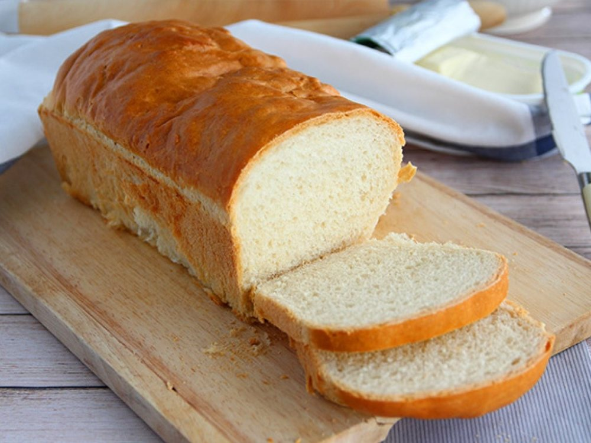

Salgados · Massas fritas/assadas
Massa básica de pão

Ingredientes
- 1 tablete de fermento biológico fresco
- ½ xícara de água morna
- 1 colher (chá) de açúcar
- 3 ½ xícaras de farinha de trigo
- 1 colher (sopa) de manteiga
- ½ colher (sopa) de sal
- Farinha de trigo para polvilhar
- Manteiga para untar
Modo de preparo
- Numa jarrinha, misture o fermento com a água e o açúcar.
- Numa tigela, coloque a farinha de trigo formando um monte. Faça um buraco no centro do monte e despeje aí a mistura de fermento. Junte a manteiga e o sal. Misture bem com uma colher de pau.
- Polvilhe uma superfície de trabalho com farinha de trigo. Sove aí a massa até ficar elástica e brilhante.
- Coloque a massa novamente na tigela, cubra com um pano de prato e deixe descansar em local protegido até dobrar de volume (cerca de 2 horas).
- Preaqueça o forno em temperatura média (180 °C). Unte com manteiga 2 assadeiras de bolo inglês de 7 x 12 x 28 cm.
- Amasse novamente a massa e divida-a ao meio. Coloque nas fôrmas e deixe descansar até ficar crescida (cerca de 40 minutos).
- Leve ao forno preaquecido e asse até os pães ficarem dourados (cerca de 20 minutos).
- Retire do forno e desenforme. Deixe esfriar e congele.
Observação
O fermento biológico fresco, bem embalado, dura até 1 mês no freezer; guarde em pequenas porções de 15 a 25 g. Congelamento: embale os pães em papel-alumínio e depois em filme plástico, ou num saco plástico que feche hermeticamente; etiquete e congele. Descongelamento: retire os pães do freezer e leve ao forno, apenas com o papel-alumínio, para descongelar e aquecer.